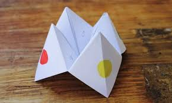
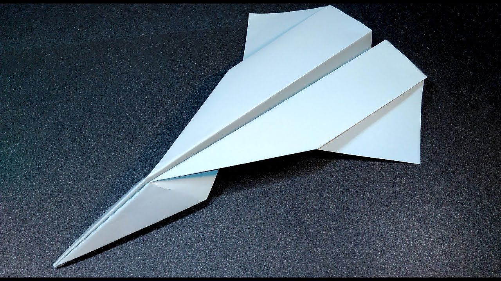
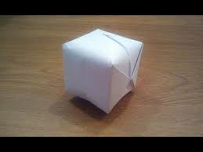
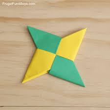

Fortune Teller : |
|---|
| The fortune teller is a unique way of finding someones future. The fortune teller will have colors or numbers that act as options for the client. Once they have chose all their options, they will get their fortune. NOTE: Writing on finished product neccessary. |
|

Paper Fortune Teller |
Paper Plane : |
|---|
| Paper airplanes are a great fun to play with and come in various designs and difficulties. You can even try to throw it farther than the world record, which is 226 feet 10 inches. |
|

Paper Airplane |
Paper Balloon/Water Bomb : |
|---|
| This craft has two uses. You can use it as a balloon or ball and toss it around. Or you can make a very intresting water bomb to throw at friends. |
|

Paper Ballon/Water Bomb |
Paper Ninja Star : |
|---|
| This is a more difficult project than the above but it will be rewarding. The ninja star can be very sharp and can be used to throw at targets or play games. |
|

Paper Ninja Star |